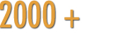

UCSF Mission Bay campus, 2003. Photo by Majed.
2000
School of Medicine radically redesigns the core curriculum to promote integration of disciplines, bringing cultural, social, and behavioral factors into the teaching of biomedical and clinical issues.
2000
School of Pharmacy establishes the Center for Consumer Self Care.
2000
Ph.D. program in Chemistry and Chemical Biology is established in the Graduate Division.
2001
The newly created International Dentist Program enrolls its first class of students.
2001
The Ph.D. program in Pharmaceutical Sciences and Pharmacogenomics is established.
2002
The Master’s of Advanced Studies degree (MAS) in Clinical Research is established in the Graduate Division.
2002
School of Pharmacy establishes satellite clinical teaching programs in Fresno and South Bay.
2003
Genentech Hall opens at the Mission Bay campus. With more than 400,000 gross square feet, it houses programs in structural and chemical biology and molecular cell and developmental biology, the Molecular Design Institute, the Center for Advanced Technology, a library, an auditorium, and commercial space.
2004
Arthur and Toni Rembe Rock Hall opens at the Mission Bay campus. It houses programs in human genetics, developmental biology, developmental neuroscience, and the Center for Brain Development.
2004
Revised curriculum implemented for the School of Dentistry, creating new interdepartmental courses developed around five thematic streams that emphasize and reinforce the integration of basic sciences and clinical sciences in dental education.
2004
Graduate Division establishes joint UCSF/San Francisco State University Doctorate in Physical Therapy (DPT).
2005
Byers Hall, The California Institute for Quantitative Biosciences (QB3) opens as the home for the California Institute of Science and Innovation (Cal ISI) at the Mission Bay campus. This is the headquarters for the Institute, which is a partnership with UC Berkeley and UC Santa Cruz. QB3 is one of the four California Institutes for Science and Innovation, developed at the initiative of Governor Grey Davis, and the only one focused on biomedical research to advance human health. Research here is intensely computational, integrating physical, mathematical and engineering sciences to tackle the complexities of genomics, proteomics, protein folding and interactions, and developing imaging systems of unprecedented power and resolution for diagnosis and treatment of disease.
2006
Elizabeth Blackburn wins Albert Lasker Award for Medical Research for the prediction and discovery of the telomerase enzyme -- which plays a key role in cell aging and human cancer.
2006
UCSF establishes Clinical and Translational Science Institute as largest recipient of NIH Clinical and Translational Science Awards.
2006
Helen Diller Family Cancer Research Building breaks ground on the Mission Bay campus. It will contain research and development programs in neurological surgery, urology and cancer research.
2006
School of Dentistry celebrates its 125th anniversary.
2006
Graduate Division establishes Ph.D. program in Developmental Biology.
2006
UCSF Certificate Program in Global Health Sciences is approved by Graduate Council.
2006
School of Pharmacy is the #1 recipient among schools of pharmacy of NIH funding for the 27th consecutive year.
2006
The Schools of Dentistry, Pharmacy, Nursing, Medicine and the Graduate Division offer the first inter-disciplinary class for all enrolled students.
2007
School of Medicine expands enrollment for first time in three decades with launch of the Program in Medical Education for the Urban Underserved (PRIME-US,) aimed at educating and inspiring new physicians to address health disparities.
2007
School of Pharmacy establishes the Medications Outcomes Center.
2007
Graduate Division establishes joint UCSF/Fresno State Doctorate in Physical Therapy (DPT).
2007
School of Dentistry is the #1 recipient among schools of dentistry of NIH funding for the 16th consecutive year.
2007
School of Nursing celebrates its centennial anniversary.
2008
UCSF breaks ground on new building at Parnassus to house Institute for Regeneration Medicine, to be home for 25 stem cell and regeneration medicine researchers.
2008
School of Medicine establishes new academic Department of Emergency Medicine.
2008
Graduate Division establishes Master's of Science in Global Health Sciences.
2008
School of Pharmacy establishes satellite clinical teaching programs in North Bay.
2008
School of Pharmacy and School of Medicine establish a joint department: Bioengineering and Therapeutic Sciences.
2009
Susan Desmond-Hellman, MD, MPH becomes UCSF's 9th Chancellor and the first woman to serve in this position.
2009
Samuel Hawgood, MBBS, becomes Dean of the School of Medicine and Vice Chancellor for Medical Affairs.
2009
Elizabeth Blackburn, PhD, becomes UCSF's fourth scientist to recieve the Nobel Prize in Physiology or Medicine for her co-discovery of telomerase.
2009
Shinya Yamanaka, MD, PhD, UCSF Professor of Anatomy, receives the Albert Lasker Basic Medical Research Award for his stem cell discoveries .
2009
The University of California becomes the first public university in California to provide honorary degrees to Japanese Americans and Japanese nationals whose educations were interrupted when they were sent to internment camps during World War II.
2010
David Julius, PhD receives the 2010 Shaw Prize in Life Sciences and Medicine for his groundbreaking work on the sensation of touch.
2010
UCSF Nobel laureate Stanley B. Prusiner, MD, Professor of Neurology and director of the Institute for Neurodegenerative Diseases, receives the National Medal of Science for his discovery of and ongoing research on prions.
2010
UCSF breaks ground on the Benioff Children's Hospital, a state-of-the-art and sustainable medical center at Mission Bay that promises to transform care for women, children, and cancer patients.
2011
UCSF opens the new Teaching and Learning Center, one of the nation's first inter-professional, team-based simulation learning centers, as part of the campus' ongoing efforts to foster collaboration and innovation among the health professions.
Leadership
UCSF Chancellors:
- J. Michael Bishop (1998-2009)
- Susan Desmond-Hellmann (2009-present)
Deans (Dentistry):
- Charles N. Bertolami (1995-2007)
-
John Featherstone (2007-present)
Deans (Graduate Division)
- C. Clifford Attkisson, Ph.D., Interim (1991-1992); Dean and Associate Vice Chancellor of Student Academic Affairs (1992-2005)
- Patricia Calarco, Ph.D., Interim (2005-2007); Dean (2007-2011)
- Joseph Castro, Ph.D., Interim (2011-2012)
- Elizabeth Watkins, Ph.D. (2012-present)
Deans (Medicine):
- Haile Debas (1993-2003)
-
David Kessler (2003-2007)
- Samuel Hawgood, Interim (2007-2009); Dean (2009-present)
Deans (Nursing):
- Kathleen Dracup (2000-2010)
- Sally Rankin (Interim 2010-2011)
- David Vlahov (2011-present)
Deans (Pharmacy):
- Mary Anne Koda-Kimble (1998-2012)
- B. Joseph Guglielmo, Jr., Interim (2012-2013); Dean (2013-present)
Directors (Medical Center)
- Mark R. Laret (2001-Present)